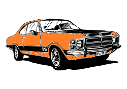
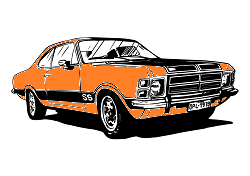
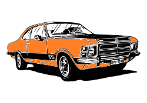
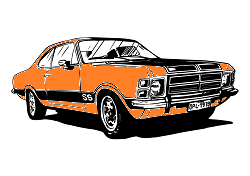

O Chevrolet Opala foi um modelo de automóvel fabricado pela General Motors do Brasil. Foi o primeiro automóvel de passeio fabricado pela montadora no país, tendo sido produzido de 1968 a 1992. ... A carroceria do modelo da General Motors foi inspirada no alemão Opel Rekord, mas com estilo e com mecanica americana.